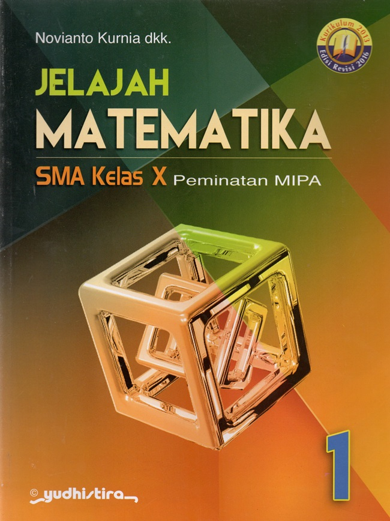
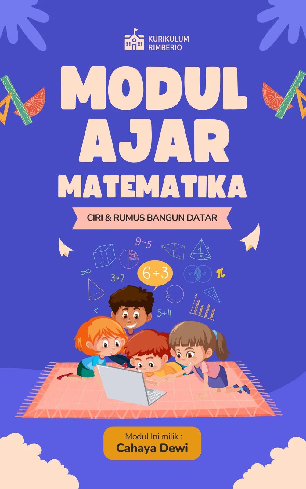
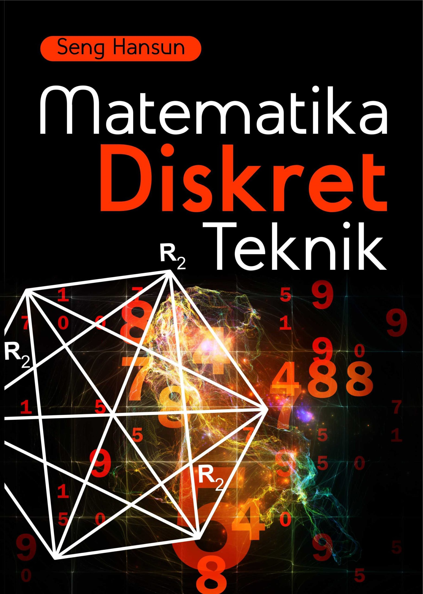
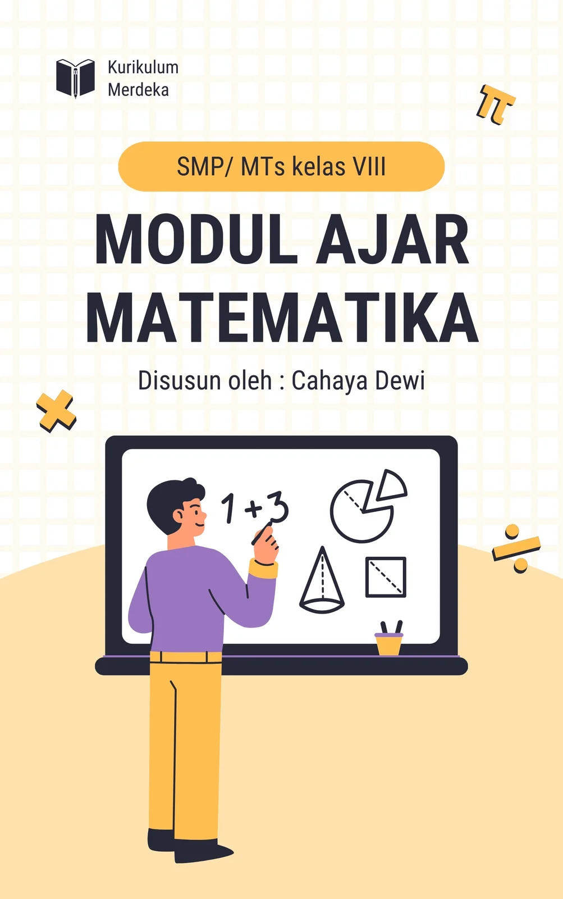

Learning Math adalah buku panduan yang dirancang untuk memudahkan siswa memahami konsep matematika secara bertahap, lengkap dengan contoh soal dan latihan interaktif.
Buku ini membantu meningkatkan keterampilan berpikir logis dan percaya diri dalam menyelesaikan masalah matematika.
Dirancang praktis agar dapat digunakan di sekolah maupun untuk belajar mandiri di rumah.
Bedah Buku: Jelajah Matematika
Ditulis oleh: Anonymous

Jelajah Matematika adalah buku pembelajaran yang mengajak siswa menelusuri dunia matematika dengan cara yang menyenangkan dan interaktif, lengkap dengan contoh soal dan latihan.
" Matematika adalah kunci untuk memahami dunia di sekitar kita"
Buku ini membantu siswa memahami konsep, berpikir logis, dan percaya diri dalam memecahkan masalah matematika.
Dirancang agar mudah digunakan di sekolah maupun untuk belajar mandiri di rumah.
Bedah Buku: Modul Matematika
Ditulis oleh: Anonymous

Modul Matematika adalah buku panduan yang dirancang untuk memudahkan siswa memahami konsep-konsep matematika secara bertahap, lengkap dengan contoh soal dan latihan interaktif. Buku ini membantu meningkatkan keterampilan berpikir logis dan percaya diri dalam menyelesaikan masalah matematika.
Dirancang praktis agar dapat digunakan di sekolah maupun untuk belajar mandiri di rumah.
Mengingatkan pembaca: “Matematika bukan hanya angka, tapi cara berpikir yang membuka dunia.”
Bedah Buku: Matematika Diskret Teknik
Ditulis oleh: Anonymous

Matematika Diskret Teknik adalah buku panduan yang dirancang untuk memudahkan siswa memahami konsep-konsep matematika diskret yang penting dalam bidang teknik, lengkap dengan contoh soal dan latihan aplikatif. Buku ini membantu siswa mengasah kemampuan logika, analisis, dan pemecahan masalah secara sistematis.
Dirancang praktis agar dapat digunakan di sekolah maupun untuk belajar mandiri di rumah.
Mengingatkan pembaca: “Matematika adalah bahasa alam semesta.”
Bedah Buku: Modul Ajar Matematika
Ditulis oleh: Anonymous

Modul Ajar Matematika adalah panduan lengkap yang dirancang untuk membantu siswa memahami konsep-konsep matematika secara bertahap, dilengkapi dengan contoh soal dan latihan yang interaktif. Buku ini mendukung siswa untuk mengembangkan kemampuan berpikir logis dan menyelesaikan masalah matematika dengan percaya diri.
Dirancang praktis agar dapat digunakan di kelas maupun untuk belajar mandiri di rumah.
Mengingatkan pembaca: “Matematika bukan hanya angka, tapi cara berpikir yang membuka dunia.”
← Kembali ke Katalog